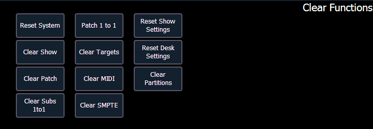
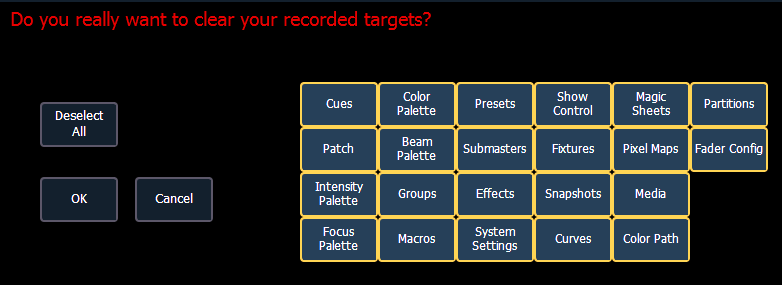

You can access the various clear options from the browser by selecting {Clear} from the main browser menu. The clear functions window will open in the CIA.

From this menu you can select one of the available clear options by clicking on the desired button in the CIA. Ion will ask you for a confirmation before performing the selected clear. For {Clear Targets}, Ion will allow you to choose which record targets you want to clear.
CAUTION: Clear functions cannot be undone by using the Undo option.

From the {Clear Targets} screen you can select which record targets you wish to clear. The buttons at the center of the CIA represent all of the record targets that you can choose to clear. By default all components are selected (gray) and will be cleared. To withhold any targets from being cleared, simply deselect them in the CIA by clicking the respective button. To deselect all of the targets, click the {Deselect All} button.
To reselect all targets, click the {Select All} button and all buttons will return to gray (selected). To stop the process, click the {Cancel} button.
When you have selected or deselected all of the record targets you require, click {OK}.
After clearing, the CIA will return to the browser. If you want to perform additional clear functions, you must select {Clear} from the browser again.
To exit the clear functions screen without clearing, press the [Displays] key at any time or select a clear button and then select {Cancel} from the confirmation screen.
Using {Reset System} will open a new show file and reset the Setup options to their defaults. Using {Clear Show} will only open a new show file.
Using {Patch 1 to 1} will clear your patch and set it to a 1-to-1 patch. Using {Clear Patch} will only clear out the patch.